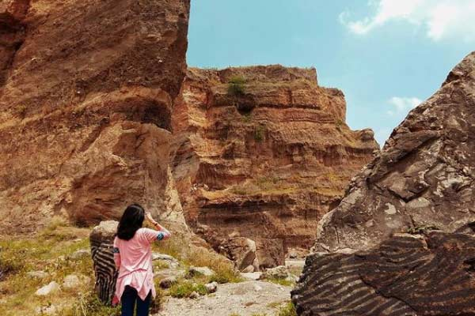
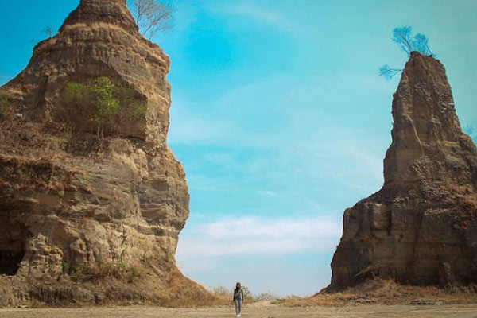
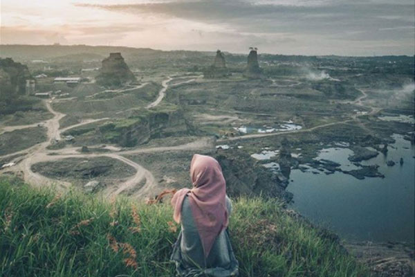

Liburan yang baik itu dimulai dari saat Anda merencanakannya. Jadi, untuk menikmati pesona Indonesia, hal terbaik yang bisa Anda lakukan yaitu mempersiapkan diri untuk situasi baik atau kurang baik selama liburan. Meskipun Anda merasa aman dan sehat untuk menjelajahi keindahan tempat wisata di Indonesia, tidak ada salahnya untuk mengetahui beberapa info & tips ketika Anda mengunjungi tempat-tempat tertentu. Di sini, kami memiliki banyak informasi berguna yang dapat Anda gunakan. Ayo cek sekarang juga!
Masih banyak tempat menarik di Semarang terbaru yang bisa anda nikmati pesona wisatanya dengan biaya terjangkau. Salah satunya Brown Canyon Semarang dengan keindahan dan spot foto instagenicnya. Cukup dengan biaya tiket masuk seharga Rp.5.000/orang, anda bisa menikmati sajian pesona wisata yang ditawarkan Brown Canyon Semarang. Dengan biaya tambahan lainnya di wisata Brown Canyon yaitu retribusi parkir kendaraan wisata Rp.2.000/motor dan Rp.5.000/mobil. (Harga tiket masuk obyek wisata Brown Canyon Demak bisa berubah setiap saat). Anda bisa mengunjungi tempat liburan di Semarang menarik satu ini kapan saja. Buka setiap hari selama 24 jam, anda bisa puas explore semua sudut Brown Canyon untuk berburu foto menarik.
Dimanfaatkan menjadi destinasi wisata, Brown Canyon Semarang selalu ramai akan wisatawan yang ingin menikmati pesonannya. Untuk berkunjung ke obyek wisata Semarang satu ini anda tidak akan merasa kesulitan. Akses jalan menuju Brown Canyon yang sudah baik dan bisa anda kunjungi menggunakan kendaraan. Lokasi dari wisata Brown Canyon sendiri beralamat di Rowosari, Kec. Tembalang, Kota Semarang, Jawa Tengah. Jika anda berangkat dari pusat kota Semarang, jarak yang harus ditempuh menuju obyek wisata Brown Canyon kurang lebih 16 km. Ketika anda hendak menghabiskan hari libur di obyek wisata Semarang satu ini namun bingung jalan yang harus dilalui. Akses peta lokasi Brown Canyon dibawah ini untuk menemani dan memudahkan perjalanan liburan anda.
Destinasi wisata baru di Semarang, Brown Canyon Indonesia dilengkapi dengan beberapa fasilitas penunjang yang akan memanjakan perjalanan liburan anda seperti: